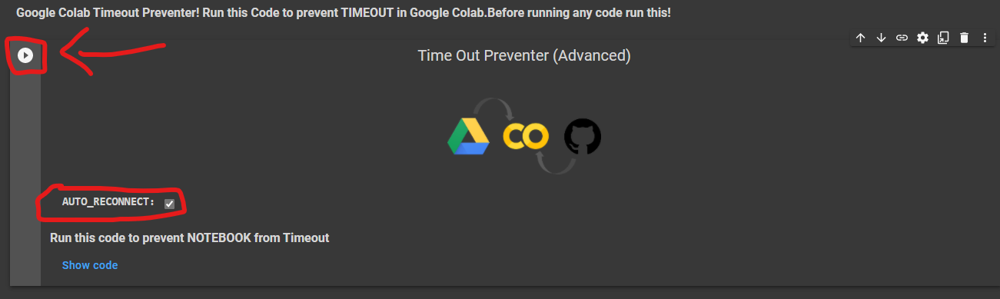
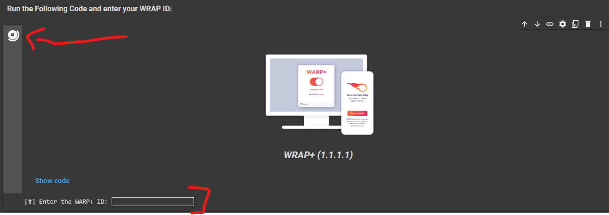
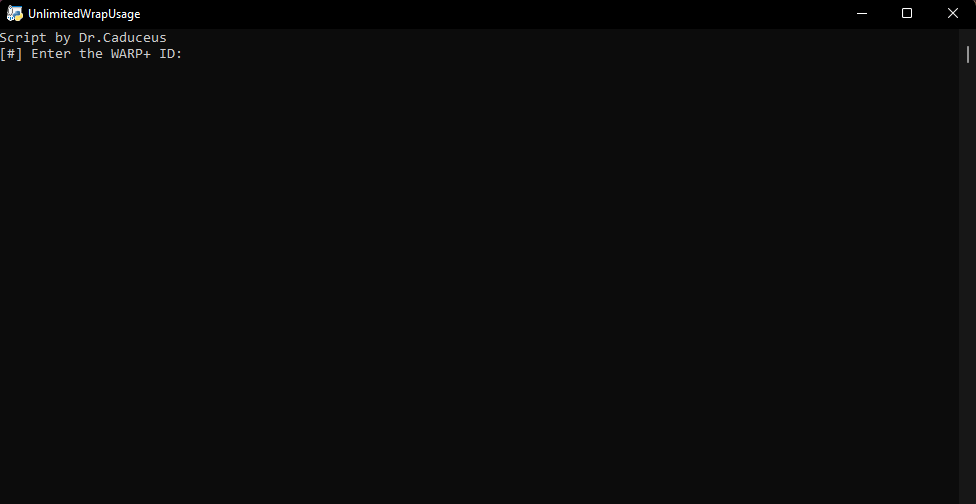
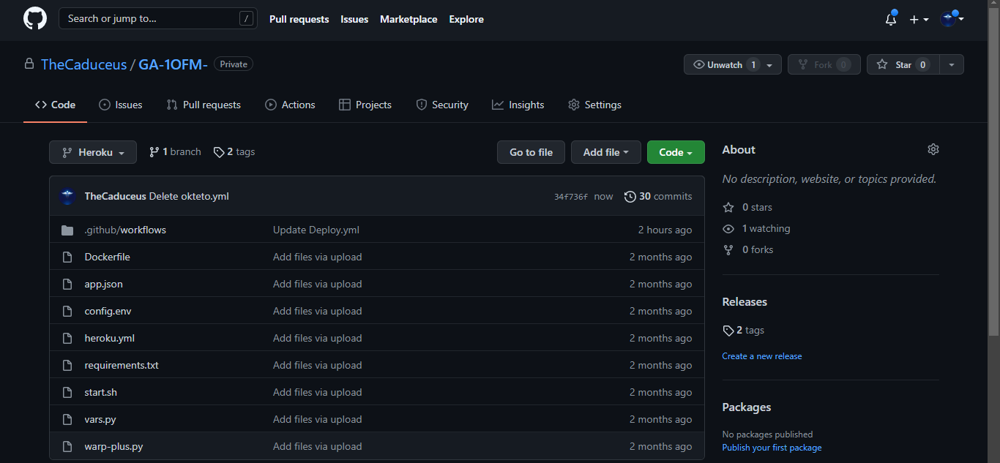
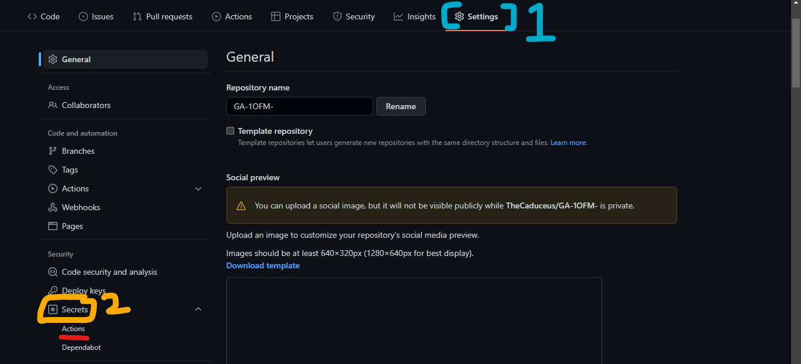
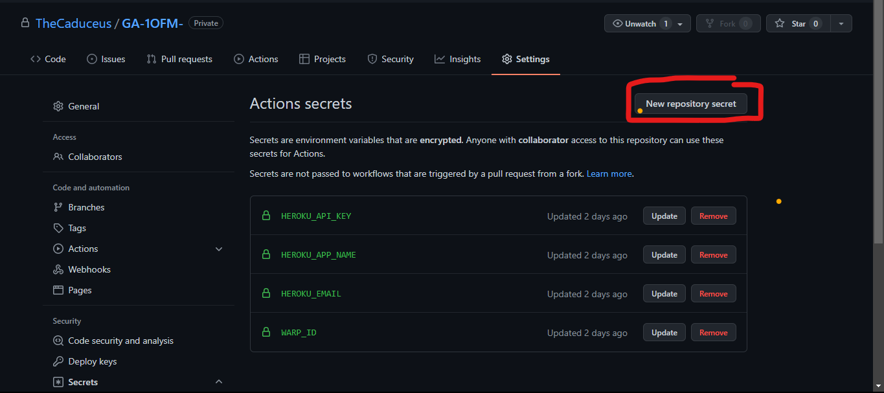
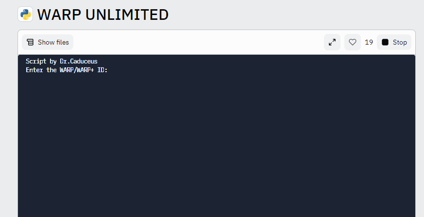
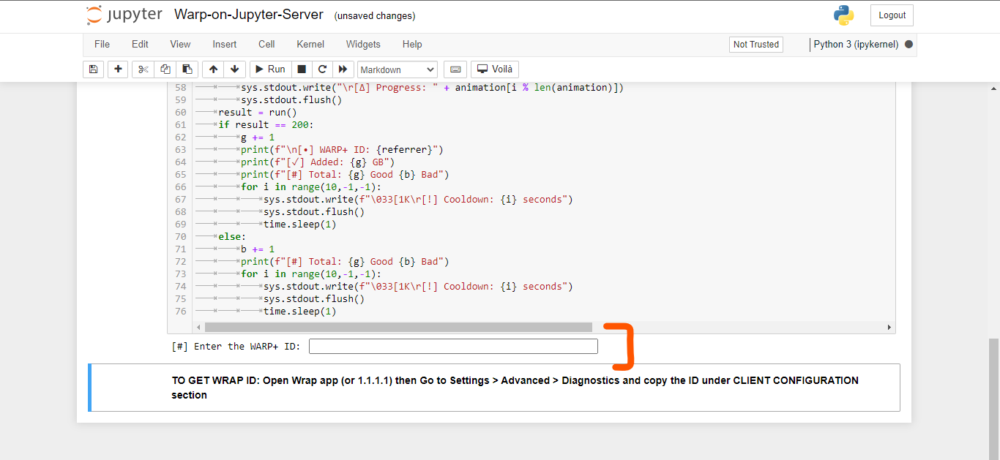

WARP+ UNLIMITED (New Methods!😊)
Get Unlimited amount of Data in Cloudflare's WARP/WARP+ VPN🆕What's New
1.Now get Hosted Script info on Telegram itself!
2.Added Jupyter Server deployment method!
3.Termux http/SSL Error now resolved!
4.Railway app deployment will now not cause false ban.
5.FAQ is now added to clear your doubts.
6.Now you can set Variables in config.env also.
7.HIDE ID option now added to choose if hide your WARP ID or not in log message send to Telegram.
8.Okteto Deployment method now fixed!
📑 Features
1.Get 1GB Per 10 Seconds!🔥
2.Run this almost everywhere!🤗
🪧Before you Proceed
1.Using this code on Google Colab will only work for 24 Hours if Time out preventer is used and that Tab is opened in your Phone or PC.
2.If you deploy this Code through Heroku or Railway app and Okteto then it will run for lifetime!
3.It does not matter this trick works on both that's on WARP or WARP+.
⚙️ How to use ?
1.First Get your WARP/WARP+ ID by going into Settings > Advanced > Diagnostics and copy the ID under CLIENT CONFIGURATION section

🕹️ Run on Google Colab
2.First Open this Code on Google Colab: Open Code!
3.Now Run the Timeout Preventer to prevent Google Colab from getting timeout

4.Then Run The WARP+ (1.1.1.1) Code and Enter your Warp ID (Also Hit Enter after it!) as shown in the Image

5.After that! Let the code run, It will give you 1GB per 10 Seconds. But you have to update the value in the app! To do it
Go to Settings > Advanced > Connection options and press on Reset security keys
❗You have to manually update the Value in the app as written in above step❗
⚡Host on Heroku
1.First Click the below Deploy button.

2.Now Enter the following values and click "Deploy" button:
Go to Settings > Advanced > Connection options and press on Reset security keys
App Name: Give a unique name to your app name.
SEND_LOG: If you want to receive info about your deployed script like script working?,amount of data generated or number of failed attempts. 0 for No and 1 for Yes.
BOT_TOKEN: Enter BOT API TOKEN from Bot father which will send you the log in your channel or group. Bot must be admin in specific channel or group to send log. Required if SEND_LOG is 1.
CHANNEL_ID: Enter Channel/Group ID (Channel/Group must be Public) with @ in which you want log to be send. Like @example or @mychannel.
HIDE_ID: To hide WARP_ID in the log message send to Telegram Channel or Group. 0 for No and 1 for Yes.

3.After Deployment! Click "Manage App" button and then click "Resources" Tab and enable the dyno.

4.Enjoy! Now you will get 1GB per 10 Seconds for Lifetime until your Heroku Account exist and you will start getting info about your script if SEND_LOG is enabled.
❗You have to manually update the Value in the app To do it
Go to Settings > Advanced > Connection options and press on Reset security keys
❗
🧿 Host on Railway App
1.First Create Account or Login on Railway App

2.Now click the following Railway deployment button:

3.After it! Enter the following values:
WARP_ID: Enter your WARP/WARP+ ID.
BOT_TOKEN: Enter BOT API TOKEN from Bot father which will send you the log in your channel or group. Bot must be admin in specific channel or group to send log. Required if SEND_LOG is 1.
CHANNEL_ID: Enter Channel/Group ID (Channel/Group must be Public) with @ in which you want log to be send. Like @example or @mychannel.
HIDE_ID: To hide WARP_ID in the log message send to Telegram Channel or Group. 0 for No and 1 for Yes.
❗The Major Advantage of the Railway app is that, it never restarts. So it will generate more Amount of Data in 24 Hours if compared with Heroku.❗
🪬 Host on Okteto
Okteto is also a best Platform like Railway, people like it because it does not restart your deployed app after 24 Hours unlike Heroku do. There are only some points we need to keep in our mind to use it effectively you will see it in this Section!
1.First Create your okteto Account, You need one GitHub account as okteto supports only one Method to either Create or Login: Create Account

2.Now import this Repository (keep the repository private) and go to Okteto branch and open config.env file.

3.After that, carefully fill the values of given variables:
WARP_ID: Enter your WARP/WARP+ ID.
BOT_TOKEN: Enter BOT API TOKEN from Bot father which will send you the log in your channel or group. Bot must be admin in specific channel or group to send log. Required if SEND_LOG is 1.
CHANNEL_ID: Enter Channel/Group ID (Channel/Group must be Public) with @ in which you want log to be send. Like @example or @mychannel.
HIDE_ID: To hide WARP_ID in the log message send to Telegram Channel or Group. 0 for No and 1 for Yes.

4.Then go to Okteto click on "Launch Dev Environment", select your repository and change branch from main to okteto.

5.Finally! Click on Launch button to deploy your repository and Enjoy!😘 and whenever you have to change values then just update config.env file and redeploy it.
🖥️ Run on Computer
Running this script on your Computer is simple than ABC!
1.If your PC not have python, then install it first: Download Python
2.Now first open the WRAP+ Unlimited Script code and paste it in notepad and save it as "warp.py" don't forget to type ".py": Show Code
3.After it run the code as shown in the Image and Enter WARP ID and Hit Enter and Enjoy!
❗The Script will run and give you 1GB data / 10 Second until your PC is on and the Window is open. Make sure that your PC or Local System is connected to INTERNET CONNECTION.❗
🧫 Deploy Through GitHub Actions
This Method is too much easier and best for users who want to deploy this script multiple times on Heroku without login on Heroku again and again!
1.First fork my different Repository here
2.Now open the settings of your Forked Repository and click Secrets->Actions.
3.After doing that, create Following Secrets:
HEROKU_API_KEY - Enter your Heroku API Key as value.
HEROKU_APP_NAME - A unique app name in small letters only.
HEROKU_EMAIL - Your Heroku Email ID.
WARP_ID - Enter your WARP/WARP+ ID. In capital only!
SEND_LOG - If you want to receive info about your deployed script like script working?,amount of data generated or number of failed attempts. 0 for No and 1 for Yes.
BOT_TOKEN: Enter BOT API TOKEN from Bot father which will send you the log in your channel or group. Bot must be admin in specific channel or group to send log. Required if SEND_LOG is 1.
HIDE_ID: To hide WARP_ID in the log message send to Telegram Channel or Group. 0 for No and 1 for Yes. 
4.If you want! then at place of creating secrets of WARP_ID, SEND_LOG, BOT_TOKEN,CHANNEL_ID and HIDE_ID just write their values in the config.env file given in the repository and directly deploy it by just providing HEROKU_API_KEY, HEROKU_APP_NAME and HEROKU_EMAIL.
5.Go to Actions Tab then click "Deploy on Heroku" and "Run Workflow". Now it will be automatically got deployed on given Heroku Account!😉

5.It will take maximum 10 Seconds to start the Workflow and minimum 1-2 Minutes to get deployed!
📲 Host on Mobile Phone
1.First Download the Termux app from here.
2.Now run the following commands in it one by one!
1.pkg install python - This Command will Download Python.
3.git clone https://github.com/TheCaduceus/WARP-UNLIMITED-ADVANCED - This Command will clone this Repository in your Device.
4.cd WARP-UNLIMITED-ADVANCED - This Command will set Directory to this Repository's created Folder.
5.python3 warp.py - This Command will run the main Script.
6.Getting
termux-setup-storage && pkg update && pkg i git python wget -y && pkg upgrade && pip install --upgrade pip

3.After above! Now Enter your WARP ID and get started.😚
🎲Run on Replit
1.Open the "WARP UNLIMITED" repl: Open it
2.Enter your WARP/WARP+ ID and press Enter to run the script. Enjoy!🙃
🧰Run on Jupyter Server
This method is best & effective alternative of "Run on Computer" method! Before using this method, let see how to Download & Setup Jupyter server which is too lightweight.
Setting up the Jupyter Server:
1.First install Python: From Here
2.Now run the CMD as Administrator and execute following commands one-by-one:
1.pip install jupyter - To install Jupyter
2.pip install notebook - To install Notebook
3.pip install voila - To install Voila
4.python -m notebook - Start Jupyter Server
3.Once you start your Server! Then Jupyter will give you its link (as shown in Image), just open it on your Browser.


4.Now Download the "Warp-on-Jupyter-Server.ipynb" file: From Here only
5.After downloading it! Locate that file through your Jupyter server and open it as shown in the image and click Run.

6.Now enter your WARP/WARP+ ID and press Enter to continue.Enjoy!😉
📈Update Values
After Successfully Deploying or Running your Script! You have to update the "Data Remaining Value in your App."
📲For Mobile:
Go to Settings-->Advanced-->Connection Options-->Press Reset Security Keys
🖥️For PC:
Just again Enter your Activation key! For getting Activation key, Open App in Mobile-->Settings-->Account-->Copy Key
🎯Points to be Remembered
1.You have to manually update the Value in the app.
2.The Major Advantage of the Railway app is that, it never restarts. So it will generate more Amount of Data in 24 Hours if compared with Heroku
3.On your Computer,The Script will run and give you 1GB data / 10 Second until your PC is on and the Window is open.
4.This Tricks works on both! That's WARP or WARP+.
5.If you are hosting this Script on your PC or Local System then confirm that it is connected to INTERNET CONNECTION.
❓FAQ
1.How much scripts can I host/run for same account?
I will recommend to host/run 3 or less than 3 (<3) scripts for each account because Cloudflare is API have request limits. Hosting/Running too many scripts can cause "Too many Requests" error which indicates that API getting too many requestes from same account and that is why there is a cooldown timer of 10 seconds to prevent this.
2.How to resolve "Too many request" Error?
As already discussed above! Hosting/Running too many scripts for same account cause this. So just switch off the scripts and bring down the number to 3 or >3 scripts for same account. Please refer to Issue #3 for more details on this.
3.Will this script cause any type of ban from Cloudflare?
No, this script don't cause ban because it just use the API provided by Cloudflare for referral system. Neither this script create any type of load or bypass any limit set by Cloudflare for there API nor it hack anything or changes any official record.
4.Script not working & producing error as shown in the image in Termux. How to solve?
This problem happens due to missing files! you can run the below given command in Termux to fix it easily:
termux-setup-storage && pkg update && pkg i git python wget -y && pkg upgrade && pip install --upgrade pip
5.Deploying this on Heroku/Railway/Okteto/Vercel cause any ban?
No, this script comes in category of Cron-Job because this script just take the WARP/WARP+ ID from user and arrange it in a particular format and start pining it in an interval of 10 seconds.This script is lightweight and don't have any load on system. You can refer to issue #5 for more details on this.
🖥️How to use this Data on PC!
Open the WARP or 1.1.1.1 app in your Phone and go to Settings > Account > Key and copy the License Key | Now paste that Key in your Warp app in Windows or MacOS
⛑Contact Us!
Join our Update Channel at Telegram: Join Now!
Directly Contact the Developer using Telegram @HelpAutomatted_Bot
❤️Credits & Thanks
Dr.Caduceus: For heavy modification as well as making New 7 Methods and this all in one Guide.
ALI-B: The Original Developer of the Base Script